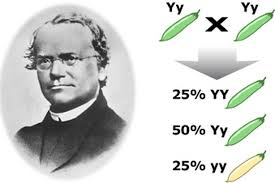

Seorang Mahasiswa Biologi dengan NPM A1D024035
yang memiliki minat besar dalam ilmu pengetahuan alam
dan selalu berusaha mengembangkan pemahaman mendalam mengenai topik-topik biologi.
Tentang Saya
Saya adalah Humaimah Eka Ningrum, mahasiswa Pendidikan Biologi angkatan 2024 dengan NPM A1D024035. Sejak kecil, saya selalu memiliki rasa ingin tahu yang besar terhadap dunia sekitar, terutama dalam memahami berbagai aspek kehidupan, mulai dari struktur dan fungsi makhluk hidup hingga interaksi kompleks mereka dengan lingkungan. Ketertarikan saya pada biologi mendorong saya untuk mengeksplorasi lebih dalam mengenai proses-proses alami yang terjadi di alam, serta bagaimana setiap komponen ekosistem saling berhubungan dan mempengaruhi satu sama lain. Melalui bidang ini, saya berharap dapat berkontribusi dalam penelitian yang tidak hanya memperdalam pemahaman ilmiah, tetapi juga memberikan solusi praktis bagi tantangan yang dihadapi masyarakat dan dunia, seperti pelestarian lingkungan, keberlanjutan sumber daya alam, serta pengembangan teknologi ramah lingkungan yang bermanfaat bagi kehidupan masa depan.
Materi Saya
Hukum Mandel
Hukum Mandel adalah dasar dari ilmu genetika yang dirumuskan oleh Gregor Johann Mendel melalui eksperimen menggunakan tanaman kacang ercis (Pisum sativum). Mendel mempelajari bagaimana sifat-sifat diwariskan dari satu generasi ke generasi berikutnya. Dalam penelitiannya, ia merumuskan dua hukum utama: hukum segregasi dan hukum asortasi bebas.
- Hukum Segregasi: Hukum ini menyatakan bahwa setiap individu memiliki sepasang alel (faktor keturunan) untuk setiap sifat, dan pasangan alel ini akan dipisahkan (segregasi) selama pembentukan sel kelamin atau gamet. Sebagai hasilnya, setiap gamet hanya membawa satu alel dari setiap pasangan. Contohnya, tanaman dengan genotipe Aa akan menghasilkan gamet A dan a secara terpisah selama pembelahan meiosis.
- Hukum Asortasi Bebas: Hukum ini menjelaskan bahwa alel-alel yang mengontrol sifat yang berbeda akan diwariskan secara independen satu sama lain, asalkan gen-gen tersebut berada di kromosom yang berbeda. Ini berarti distribusi satu pasangan alel tidak memengaruhi distribusi pasangan alel lainnya. Sebagai contoh, jika mempelajari dua sifat, seperti warna biji (kuning atau hijau) dan bentuk biji (bulat atau keriput), kombinasi alel yang dihasilkan di gamet akan bervariasi secara acak, misalnya YR, Yr, yR, atau yr.
Eksperimen Mendel melibatkan persilangan tanaman dengan sifat tertentu, seperti warna bunga atau bentuk biji. Pada persilangan monohibrid (satu sifat), ia menemukan pola perbandingan fenotipe 3:1 di generasi kedua (F2). Pada persilangan dihibrid (dua sifat), pola fenotipe di F2 menunjukkan perbandingan 9:3:3:1. Hasil ini menjadi bukti untuk hukum-hukum yang dirumuskannya.
Hukum Mendel memiliki peran penting dalam pemahaman genetika modern. Penemuan ini menjadi dasar dalam menjelaskan pola pewarisan sifat, baik pada tumbuhan, hewan, maupun manusia. Hukum ini juga relevan dalam bidang seperti pemuliaan tanaman, konservasi, dan penelitian penyakit genetik.
Kontak Saya
Hubungi saya melalui formulir di bawah ini atau email saya di arumhumaimah48@gmail.com.